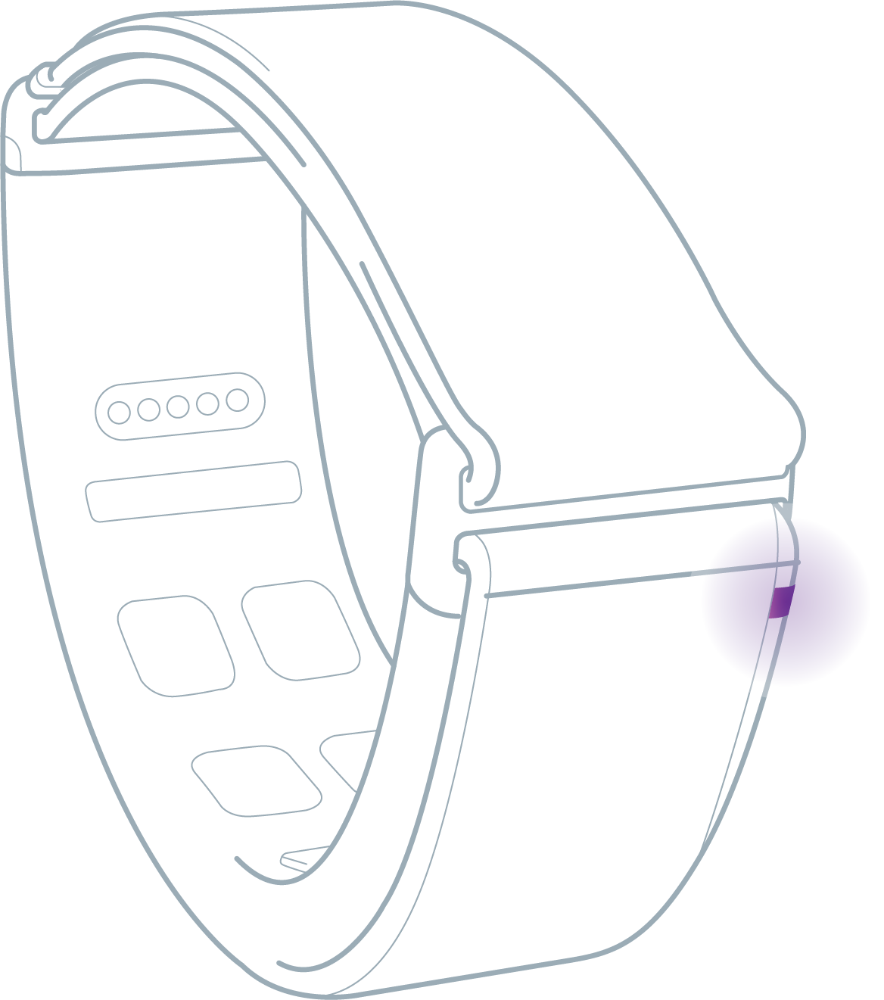
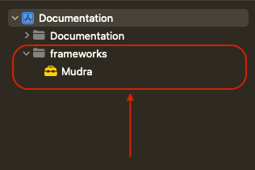
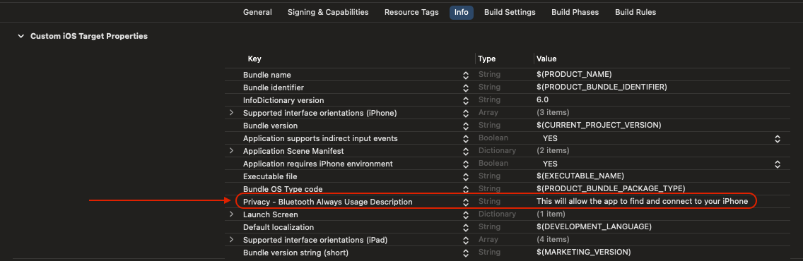
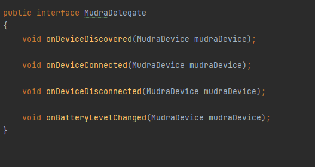

Welcome
Welcome to Mudra SDK. This document enables creating your own unique experiences based on the Mudra Band™ and Mudra API. Here we will explain how to use the band as well as interface with your device. Our API includes language bindings for Swift (iOS), Java (Android) and C# (Unity Plugin). You can find links to a sample application for each of iOS, Android or Unity under the Sample Applications section.
Device Modes
| Mode | Description | LED Indication |
|---|---|---|
| Advertising | Flashing orange for one minute | |
| Connected | Flashing green for 1 second |  |
| Low Battery | Flashing red | |
| Charging | In case of a full charged battery constant blue, otherwise flashing blue | |
| Firmware update | Constant purple |  |
Access the API
iOS
Download Mudra.framework from the following link : framework
Add to your project in Xcode group/folder named "frameworks".
Add Mudra.framework to this group/folder "frameworks" and sign 'Copy if needed' when adding the framework.

- Go to your project -> General tab -> Frameworks, Libraries, And Embedded Content -> Set the value of Mudra.framework to "Embed & Sign"

- Go to your project -> Info tab -> Add a new row titled "Called when the bluetooth state is changed.Privacy - Bluetooth Always Usage Description." In the value field, provide the reason for requiring BLE. For example, you could write: "This allows the app to find and connect to your iPhone."

Android
// gradle.properties file:
authToken=<Your Jitpack Token>
// settings.gradle file:
dependencyResolutionManagement {
repositoriesMode.set(RepositoriesMode.FAIL_ON_PROJECT_REPOS)
repositories {
google()
mavenCentral()
maven { url 'https://jitpack.io'
credentials { username authToken }}
}
}
// build.gradle file:
dependencies {
.
.
.
implementation 'com.github.wearable-devices:Dev_MudraAndroidSDK:1.5.10.3'
}
// manifest file:
<uses-permission android:name="android.permission.BLUETOOTH" />
<uses-permission android:name="android.permission.BLUETOOTH_ADMIN" />
<uses-permission android:name="android.permission.ACCESS_FINE_LOCATION" />
<uses-permission android:name="android.permission.ACCESS_COARSE_LOCATION" />
- To access the API you must first generate an access token
- Navigate to https://jitpack.io/, Sign in using your GitHub account and credentials
- Authorize Jitpack in order to connect to Github
- Tap your username on the top left corner of the screen
- Copy the access token shown on the first line and add it to your project gradle.properties file:
- Add the repository to your project settings.gradle file:
- Add BLE permission to your project manifest.xml file:
- Implement the SDK to your project gradle.build file inside the dependencies:
Unity
Go to the Hierarchy pane in your mudra editor, press create and select a Mudra manager. A new MudraManager Object will be created.
There are two ways to use the Mudra plugin:
(1) Using C# Unity scripts (requires coding). See Unity tab on the right for explanation. You can find the full example in the assets folder in the file named MudraUnityScriptExample.
(2) Using UI on the MudraManager Unity object menu (no coding required). Using the MudraManager UI, it is possible to enable\disable each of the features. For each feature, it is also possible to add callbacks.
IMPORTANT: Write the path of your calibration file in the UI. Default file path is: "C:\Program Files\Wearable Devices\Mudra\Calibration.txt". In the Unity 'Poject Settings', set 'Write Permission' to 'External(SDCard)' instead of the default 'Internal' (in order to read the calibration txt file).
*Please make sure you are using the latest version of Unity and that the dongle is plugged in to your PC.
Initialization and Connection
iOS
//ContentViewModel that implements the MudraDelegate
import Mudra
import Foundation
class ContentViewModel : ObservableObject {
static let shared = ContentViewModel()
@Published var contentModel : ContentModel = ContentModel()
}
extension ContentViewModel: MudraDelegate {
func onBluetoothStateChanged(_ state: Bool) {
DispatchQueue.main.async {
//Update the UI Here!
}
}
func onDeviceConnectedByIos(_ device: MudraDevice) {
//Event : when mudra device connects to the iPhone operating system "iOS"
DispatchQueue.main.async {
//Update the UI Here!
}
}
func onDeviceDisconnectedByIos(_ device: MudraDevice) {
//Event : when mudra device disconnects from the iPhone operating system "iOS"
DispatchQueue.main.async {
//Update the UI Here!
}
}
func onMudraDeviceConnected(_ device: MudraDevice) {
//Event : when mudra device connects to the app
DispatchQueue.main.async {
//Update the UI Here!
}
}
func onMudraDeviceDisconnected(_ device: MudraDevice) {
//Event : when mudra device disconnects from the app
DispatchQueue.main.async {
//Update the UI Here!
}
}
func onBatteryLevelChanged(_ device: MudraDevice) {
//Event : when battery level changed for connected device
DispatchQueue.main.async {
//Update the UI Here!
}
}
}
//--------------------------------------------------------------------------------------------------------------------
// AppDelegate
import Mudra
import UIKit
class AppDelegate: UIResponder, UIApplicationDelegate, ObservableObject {
func application(_ application: UIApplication, didFinishLaunchingWithOptions launchOptions: [UIApplication.LaunchOptionsKey: Any]?) -> Bool {
print("application launched")
self.setMudraDelegate() //<--
self.setLicense() //<--
self.initBluetouth() //<--
return true
}
func setMudraDelegate() {
Mudra.shared.delegate = ContentViewModel.shared //<-- "ContentViewModel which implements the MudraDelegate"
}
func setLicense() {
// Set your licenses (sent by Wearable Devices for expanded features)
Mudra.setLicense(License.Main, "LicenseType::Main")
}
func initBluetouth() {
print("initBlueTouth")
Mudra.shared.initBluetouth()
}
}
- The iOS SDK supports development in both Objective-C and Swift through the implementation of the MudraDelegate Protocol. Note that the API supports multiple devices; when the 'device' parameter is received in the following functions, it refers to this specific device.

| Event | Description |
|---|---|
| func onBluetoothStateChanged(_ state: Bool) | Called when the bluetooth state is changed. When the bluetooth is turened on/off the state becomes true/false. |
| func onDeviceConnectedByIos(_ device: MudraDevice) | Called for each device which appeared as connected on the iOS BLE settings. This callback is called right after the bluetooth is finished Initializing (2). |
| func onDeviceDisconnectedByIos(_ device: MudraDevice) | Called when a device is disconnected by the iOS. |
| func onMudraDeviceConnected(_ device: MudraDevice) | Called when a device is connected to the application. |
| func onMudraDeviceDisconnected(_ device: MudraDevice) | Called when a device is disconnected by the application. |
| func onBatteryLevelChanged(_ device: MudraDevice) | Called when the battery level is changed. |
Start by initializing bluetooth environment and setting up the system :
- Mudra.shared.delegate = ContentViewModel.shared
- Mudra.setLicense(License.Main, "LicenseType::Main")
- Mudra.shared.initBluetouth()
In order to connect or disconnect a device to the application :
| Description | Function |
|---|---|
| To connect a device call the connect function | device.connect() |
| To disconnect a device call the disconnect function | device.disconnect() |
Android
- The Android SDK supports development with Java through the implementation of the MudraDelegate Interface. Note that the API supports multiple devices; when the 'device' parameter is received in the following functions, it refers to this specific device.
- 
public class MainActivity extends AppCompatActivity {
private ActivityMainBinding binding;
@Override
protected void onCreate(Bundle savedInstanceState) {
super.onCreate(savedInstanceState);
binding = ActivityMainBinding.inflate(getLayoutInflater());
setContentView(binding.getRoot());
initializeMudra();
}
private void initializeMudra()
{
Mudra.getInstance().requestAccessPermissions(this);
Mudra.getInstance().setLicense(Feature.RawData, "LicenseType::Main");
}
@Override
public boolean onCreateOptionsMenu(Menu menu) {
// Inflate the menu; this adds items to the action bar if it is present.
getMenuInflater().inflate(R.menu.menu_main, menu);
return true;
}
}
| Event | Description |
|---|---|
| public void onDeviceDiscovered(MudraDevice mudraDevice) | Called when a device is discoverd by the application. |
| public void onDeviceConnected(MudraDevice mudraDevice) | Called when a device is connected to the application. |
| public void onDeviceDisconnected(MudraDevice mudraDevice) | Called when a device is disconnected by the application. |
Start by initializing Mudra environment and setting up the system inside the MainActivity:
- Mudra.getInstance().requestAccessPermissions(this);
- Mudra.getInstance().setLicense(Feature.RawData, "LicenseType::Main");
In order to connect, disconnect, scan, stop scanning and get paired devices for a device to the application :
| Description | Function |
|---|---|
| To connect a device call the connect function | mudraDevice.connect(Context context) |
| To disconnect a device call the disconnect function | mudraDevice.disconnect() |
| To scan for a Mudra device | Mudra.getInstance().scan(Context context); |
| To stop scaning for a Mudra device | Mudra.getInstance().stopScan(); |
| To get the paried Mudra devices to the OS | Mudra.getInstance().getBondedDevices(Context context); |
//--------------------------------------------------------------------------------------------------------------------
private void setMudraDelegate() {
Mudra.getInstance().setMudraDelegate(new MudraDelegate() {
@Override
public void onDeviceDiscovered(MudraDevice mudraDevice) {
}
@Override
public void onDeviceConnected(MudraDevice mudraDevice) {
}
@Override
public void onDeviceDisconnected(MudraDevice mudraDevice) {
}
@Override
public void onBatteryLevelChanged(MudraDevice mudraDevice) {
}
});
}
- To listen to MudraDelegate callbacks you need to set the MudraDelegate by : Mudra.getInstance().setMudraDelegate(MudraDelegate mudraDelegate);
Gesture Recognition
After connecting to a device it is possible to register to all kinds of callbacks like listening to gestures and pressure. This section is focused on listening to gestures. It is possible to listen to all kinds of gestures like : thumb, index, tap, twist, double index, double middle tap and by etc.
device.setOnGestureReady { (gesture) in print("OnGestureReady \(self.gesture2String(gesture: gesture))") }
mudraDevice.setOnGestureReady { (gesture) in print("OnGestureReady \(self.gesture2String(gesture: gesture))") }
OnGestureReady onGestureReady = new OnGestureReady() {
@Override
public void run(GestureType gesture) {
// Do something with gesture (this value could be thumb, index, tap, twist, double index, double middle tap and by etc)
}
};
mudraDevice.setOnGestureReady(onFingertipPressureReady); //Enable
mudraDevice.setOnGestureReady(null); //Disable
Fingertip Pressure
In order to esstimate the amount of finger tip pressure, use the descriped API. The returned pressure parameter indecates 1.0 for the most amount of pressure while 0.0 indecates the lowest.
device.setOnProportionalReady {(proportional) in print( "OnProportionalReady \(proportional)") }
OnFingertipPressureReady onFingertipPressureReady = new OnFingertipPressureReady() {
@Override
public void run(float v) {
// Do something with v (this value is between 0 and 1)
}
};
mudraDevice.setOnFingertipPressureReady(onFingertipPressureReady); //Enable
mudraDevice.setOnFingertipPressureReady(null); //Disable
private void UpdateFingerTipPressure()
{
float? fingerTipPressure = Plugin.Instance.GetLastFingerTipPressure();
if (fingerTipPressure != null)
{
print($"FingerTipPressure {fingerTipPressure}");
}
}
void Update()
{
UpdateFingerTipPressure();
//...
}
Raw Data
Functionality for exposing raw SNC (Surface Nerve Conductance) sensor values. This function may incur an additional fee (We will send a license with instructions for those who are interested in this functionality).
Sample Applications
- Android Sample Application gitHub : AndroidAppExample
- iOS Sample Application gitHub : iOSAppExample
Troubleshooting
| Problem | OS | Solution |
|---|---|---|
| Mudra does not connect to host device | Android | Check your Bluetooth version, we recommend 4.2 and above. |
| Mudra does not connect to host device | All | Check if your device's LED flashes red, if so recharge (LED will flash blue) |
| Mudra gestures are not correctly recognize | All | Please try again our on-boarding app. Try to follow the instruction and perform another calibration. |
| Mudra pressure values fluctuate | All | Please make sure your device is in contact with your skin (no need to be tight) |
| Missing dll error | Unity | Make sure installation created an environment variable path and unpacked the dlls inside. If not, try running Setup.msi as administrator |
Please contact support@wearabledevices.co.il for any additional questions or suggestions.